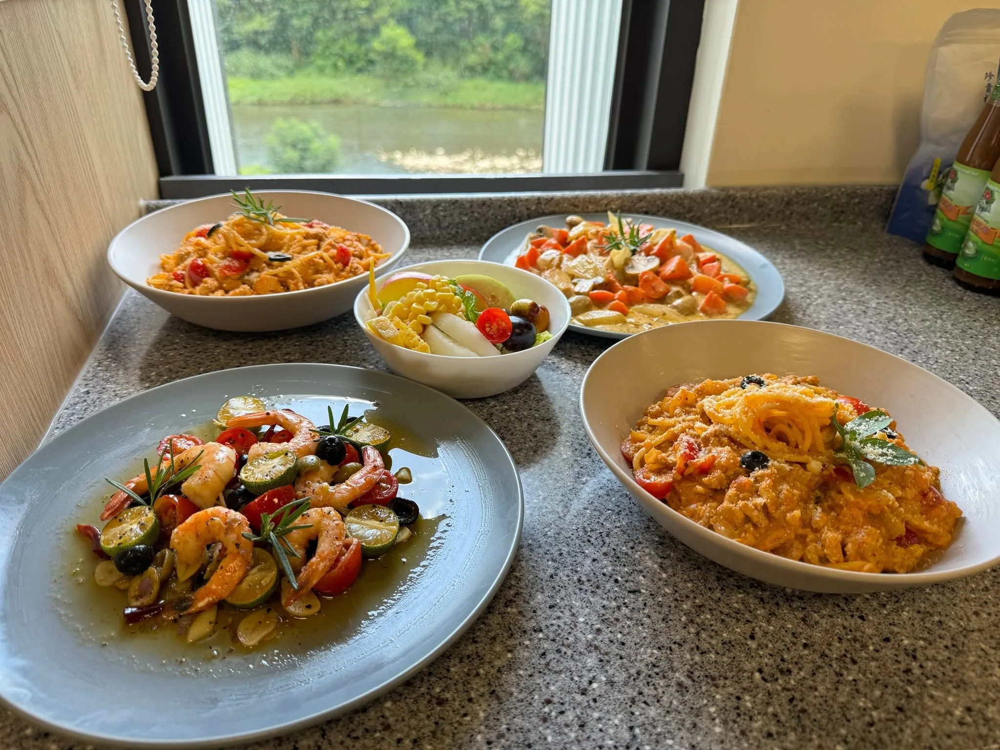

到府私廚價格怎麼算？2026 最新收費標準
掌握報價架構與預算配置，避免私廚預約時常見的費用誤差。

每一篇文章都是舒苑主廚親自整理的私廚實務、食材觀察與高端餐宴經驗，幫您快速掌握預約、菜單與服務策略。
從價格、預算到場域規劃與食材選品，完整整理私廚餐宴最實用的知識地圖。
掌握報價架構與預算配置，避免私廚預約時常見的費用誤差。
教您辨識私廚專業度、服務流程與餐宴品質重點。
從節奏、擺盤到食材選品，解構到府私廚的星級用餐標準。
企業活動餐宴的規劃原則、出餐策略與高端宴會重點。
了解下午茶菜單、茶飲搭配與高端招待的專業細節。
掌握中式辦桌外燴的規劃流程、菜單配置與現場節奏。
從私廚基礎知識、到府服務、外燴規劃到食材與品牌故事，共 100 篇完整專欄文章，依主題分為六大章節。
加入主廚專欄訂閱，獲得最新餐宴提案與高端服務指南。